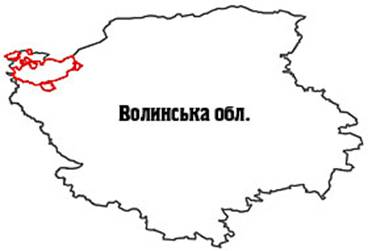

Шацький національний природний парк.

Розташування: Волинська область, Шацький район
Площа: 48977,0 га
Підпорядкування: Державний комітет лісового господарства України
Поштова адреса: 44021, Волинська обл., Шацький р-н, с. Світязь, вул. Жовтнева

Шацький національний природний парк було створено постановою Ради Міністрів УРСР від 28 грудня 1983 року № 533, на площі 32515,0 га. Згідно з розпорядженням Ради Міністрів УРСР від 31 березня 1986 р. № 159-р в постійне користування парку було надано 6761,8 га, а відповідно до Указу Президента України від 16 серпня 1999 року № 992 площу парку було розширено і на сьогодні вона становить 48977,0 га, з них 20856,0 га земель знаходиться у його постійному користуванні.Парк було створено на базі державних ландшафтних заказників "Озеро Кримне", "Озеро Пісочне", "Озеро Пулемецьке", "Озеро Світязь", які були оголошені у 1974 році, зоологічної пам'ятки природи "Озеро Климівське", гідрологічних пам'яток природи "Болото Луки", "Болото Мелеване", "Болото Піддовге-Підкругле", що були оголошені у 1975 році.
На сьогодні до території парку входять ботанічний заказник загальнодержавного значення "Втенський" (130,0 га), лісові заказники місцевого значення "Ростанський" (14,6 га) та "Ялинник" (83,0 га), іхтіологічний заказник "Сомиець" (46,0 га) та 4 ботанічні пам'ятки природи місцевого значення.
Згідно з функціональним зонуванням територія парку розподілена на заповідну зону площею 5145,0 га, зону регульованої рекреації - 12971,0 га, зону стаціонарної рекреації - 978,0 га та господарську зону площею 29883,0 га.
Парк створено з метою збереження, відтворення та раціонального використання унікальних природних комплексів Шацького поозер'я, посилення охорони водно-болотних угідь міжнародного значення, сприяння розвитку міжнародного співробітництва у галузі збереження біологічного та ландшафтного різноманіття.
В установі працюють 126 чоловік, з них у науковому підрозділі - 7, у службі охорони - 65 осіб.
Територія парку знаходиться на заході одного з найкрупніших болотно-озерно-лісових комплексів у Європі - регіону Полісся, яке поширене на півночі України, півдні Білорусі та, частково у Польщі та Російській Федерації.
За схемою фізико-географічного районування територія парку відноситься до області Волинського Полісся Поліської провінції Зони мішаних лісів південного заходу Східно-Європейської рівнини. Тут проходить головний Європейський вододіл, який розділяє басейни річок Прип'яті і Західного Бугу.
Територія парку включає, переважно, типові для Західного Полісся екосистеми: озерні, лісові, болотні та лучні. Чорницево-зеленомошні соснові ліси є тут найбільш характерним типом лісів. Луки та водні екосистеми зустрічаються переважно поблизу рік та озер.
Визначальною особливістю цієї території є зосередження на ній великої кількості озер, різних за своїми характеристиками та походженням, що утворюють одну з найбільших озерних систем Європи. В пониззях між озерами знаходяться евтрофні та мезотрофні осокові болота. Тут представлені також рідкісні для Полісся оліготрофні болота.
Поверхня Шацького природного парку плоска, рівнинна, з незначним уклоном на північ і абсолютними висотами в межах 160-180 м над рівнем моря. Оскільки ця територія знаходиться у межах крайової зони Дніпровського льодовика, тут трапляються як флювіогляціальні, так і власне льодовикові моренні відклади. Для південно-східної частини парку характерні водно-льодовикові форми рельєфу - флювіогляціальні піщані ози, які трапляються також в околицях с. Світязь. Підвищення чергуються із заболоченими зниженнями. Найхарактернішою геоморфологічною особливістю парку є поширення озерних котловин.
Усього в сучасних межах парку є 23 озера загальною площею 6338,9 га. Вони є характерними представниками поліських озер, розміщених в пониженнях, які утворились внаслідок вимивання розчинних гірських порід, осідання земної поверхні при виносі дрібних фракцій із пористих нерозчинних порід та з опусканням і підняттям окремих тектонічних блоків.
За розмірами більшість озер невеликі, лише 5 з них мають площу водного дзеркала, яка перевищує 200 га, а озеро Світязь є найбільшим і найглибшим озером природного походження в Україні. Його площа становить 2622,0 га, довжина 9225 м, ширина 4000 м, максимальна глибина - 58,4 м, середня глибина - 6,9 м. Другим за величиною є озеро Пулемецьке (1568 га), далі ідуть озеро Луки (673,2 га), Люцимер (430,0 га, Острів'янське (255,0 га), Пісочне (187,0 га). Найменшим є озеро Навраття, площа якого становить 1,9 га, довжина 175 м, ширина 150 м, максимальна глибина - 2,0 м, середня глибина 1,0 м.
Рівень води в озерах нижчий, ніж у р. Прип'ять. Озера відділяються від неї невисоким водорозділом і належать уже до водозбору Західного Бугу, а не Дніпра, тобто до басейну Балтійського моря. Вода в озерах прісна і належить до типу гідрокарбонатно-кальцієвих, насичена розчиненим киснем, має нейтральну та слабколужну реакцію, чиста і придатна для пиття.
За генезисом більшість озер мають флювіогляціальне походження. Найбільші ж озера (Світязь, Пулемецьке, Пісочне) пов'язують із процесами карстоутворення. Рівень води в озерах карстового типу в цілому стійкий, бо їх живлять не тільки атмосферні опади і ґрунтові води, а й води нижніх крейдяних горизонтів. Частина водойм розташована серед заболочених масивів і поповнюється лише за рахунок атмосферних опадів та ґрунтових вод. Заплава р. Прип'ять у межах парку має ширину до 1,5 км, дві її надзаплавні тераси поступово переходять в озерну рівнину Західного Бугу.
Мозаїчність рельєфу території Шацького парку зумовила і значне різноманіття її ґрунтового покриву. Тут переважають дерново-підзолисті ґрунти, що сформувалися на давньоалювіальних та флювіогляціальних відкладах. Високе залягання ґрунтових вод сприяє формуванню глейових різновидів цих ґрунтів. Обмежено поширені дерново-карбонатні ґрунти на кальцитових глинах та суглинках, що мають лужну реакцію, значний вміст карбонатів та гумусу. Під трав'янистою рослинністю сформувалися дерново-глейові та лучні ґрунти на алювіальних відкладах. Значну частину території займають торф'яні ґрунти, що утворилися у пониженнях внаслідок надмірного зволоження.
Клімат тут помірно континентальний, вологий, з м'якою зимою, нестійкими морозами, значними опадами, нежарким літом. Зима з частими відлигами, невеликою кількістю опадів. Переважають західні вітри, що пом'якшують температурний режим території. В цілому клімат парку сприятливий для розвитку різноманітних видів рекреації.
Особливості геолого-геоморфологічної будови та кліматичних умов, наявність численних озер вплинули на характер рослинності парку. Сучасний його рослинний покрив відзначається мозаїчністю та різноманітністю: ліси займають 27472,8 га (56,1 % території парку), болота - 1344,3 га (2,7%), водойми (озера, ставки, канали) - 6932,5 га (14,1%). Решта площі зайнята під сільськогосподарськими угіддями, населеними пунктами, садибами, дорогами тощо.
На території парку представлені як природні, так і трансформовані людською діяльністю екосистеми. Тут представлені природні ліси та різновікові лісові насадження, незаймані болота та меліоровані торфовища з системою канав, луки та сільськогосподарські угіддя. Більшість боліт є меліорованими.
Ліси поширені на території парку порівняно рівномірно, але суцільні великі масиви їх зосереджені в його східній частині. Тут переважають соснові ліси, для яких характерний середньовіковий деревостан, досить високий і добре зімкнений. Найпоширенішими є сосняки-чорничники. Їх охоче відвідують як місцеве населення, так і відвідувачі парку в сезон збору ягід. Дещо менші площі зайняті сосновими лісами, зеленомоховими та вересовими. Вершини піщаних гряд вкриті сосняками лишайниковими. Досить значною у лісовому покриві є роль вільшаників, невеликі ділянки яких зустрічаються по всій території парку. Вони розташовані по периферії боліт та у пониженнях на торф'янисто-глейових ґрунтах. Переважають вільшаники кропивові, часто трапляються гравілатові та осокові. Березові ліси трапляються на місці корінних соснових лісів. З них особливо привабливими для відпочинку є березняки орлякові та злакові. Їх світлі деревостани, грибні місця приваблюють відвідувачів парку. Ділянки з більш багатими ґрунтами зайняті дубово-сосновими та грабово-дубовими лісами, проте вони займають незначні площі.
На території парку є багато боліт. Вони різноманітні за потужністю торф'яних шарів і типом рослинного покриву. Найпоширеніші низинні (евтрофні) болота, серед яких переважають трав'яні. Вони сформувалися переважно в заплаві Прип'яті і частково - Західного Бугу. В міжозерних котловинах зосереджені як евтрофні, переважно осоково-гіпнові, так і мезотрофні болота, зрідка трапляються оліготрофні болота. Найбільшими із болотних масивів є болота Вунич (322,0 га), Кругле-Довге (260,3 га), Став (220,0 га), Рипицьке (110,0 га).
Своєрідності території парку надають і луки, основні масиви яких прилягають до східної частини заплави Прип'яті. Невеликими ділянками трапляються вони і серед лісових масивів та на припіднятих ділянках навколо боліт.
Велика кількість озер, каналів та інших водойм зумовила значний розвиток прибережно-водної рослинності. Прибережна смуга зайнята переважно очеретом, а глибше, із збільшенням товщі води - кугою озерною. На великих глибинах трапляються угруповання жабурника, рдесників, водопериці та ін. Угруповання водних рослин відіграють велику роль у підтриманні функціонування озерних екосистем. Так, прибережні ценози створюють умови для нересту риби. Прибережні зарості озер є також місцем гніздування багатьох видів птахів.
Великого природоохоронного значення Шацькому парку надає наявність рідкісних рослинних угруповань, занесених до Зеленої книги України, яких тут нараховується 14. До них відносяться такі лісові угруповання: групи асоціацій соснових лісів зеленомохових та чорницевих, соснових лісів ялівцевих (з ялівцем звичайним), дубово-соснових лісів ліщинових. Серед болотної рослинності рідкісними є формації шейхцерієво-сфагнова та осоково-шейхцерієво-сфагнова, осоки Девелла, меч-трави болотної, а серед водної рослинності - формації альдрованди пухирчастої, латаття білого, латаття сніжно-білого, глечиків жовтих, їжачої голівки малої, рдесника червонуватого, рдесника туполистого, куширу підводного.
Флора парку налічує 795 видів вищих судинних рослин, серед яких найбільшими за кількістю видів є родини складноцвітих, злакових та осокових. Тут відмічено зростання 110 видів мохоподібних, 265 видів діатомових водоростей, 75 видів справжніх грибів. Загалом тут представлено біля 40% флори Українського Полісся в цілому або 70% флори Західного Полісся.
До Червоної книги України занесено 28 видів флори парку: береза низька, зозулині черевички справжні, булатка червона, гніздівка звичайна, жировик Лезеля, любка дволиста, журавлина дрібноплода, росички англійська та середня, товстянка звичайна і ін.
Фауна парку загалом включає три фауністичні комплекси: лісовий, водно-болотний та синантропний. У кількісному відношенні домінують представники перших двох комплексів.
Тваринний світ парку представлений типовими поліськими видами: тут зустрічаються лось, косуля, дикий кабан, заєць-русак, білка. Із хижих ссавців звичайними на території парку є лісова куниця, горностай, ласка, лісовий тхір, лисиця, рідкісними - куниця кам'яна, борсук, видра річкова, єнотовидний собака та вовк. Нечисленними або навіть рідкісними є представники рукокрилих: водяна нічниця, вухань, пізній кажан, вечірниця дозірна, малий нетопир. Своєрідною і різноманітною є орнітофауна парку. Її орнітокомплекси (лісові, прибережні, пасовищ, заболочених лук, сільгоспугідь) найбільш повно характеризують і відображають весь склад орнітофауни Волинського Полісся. Із плазунів у значній кількості зустрічаються ящірки, вуж звичайний, черепаха болотяна, рідко можна побачити гадюку, мідянку та веретінницю ламку. Із земноводних звичайними є тритон звичайний, ропухи, жаби, із риб - лящ, щука, окунь, плітка, плоскирка, карась, зрідка трапляються сом, минь і ін. В озерах парку водиться такий цінний вид риб, як вугор річковий.
Фауна хребетних налічує 333 види: 29 видів риб, 12 - земноводних, 7 - плазунів, 241 вид птахів, 44 види ссавців. Із безхребетних тут зареєстровано мешкання 31 виду молюсків, 71 вид ракоподібних, 244 - павукоподібних, 110 - комах. Із них 9 видів занесені до Європейського червоного списку, 33 види - до Червоної книги України, 154 види - до Додатку 2 Бернської конвенції.
Із "червонокнижних" на території парку охороняються ропуха очеретяна, мідянка, лелека чорний, лебідь малий, жовта чапля, пугач, шуліка рудий, гага звичайна, корольок червоноголовий, кутора мала, горностайі ін.
Надзвичайно велике значення має територія парку для збереження багатьох видів птахів. Західне Полісся є важливим регіоном для збереження глобально зникаючого виду птахів - очеретянки прудкої, важливим середовищем існування таких видів, як глухар, коловодник ставковий, журавель сірий та ін., які в Європі знаходяться під загрозою зникнення. Цей регіон є дуже важливим місцем відпочинку птахів під час їх міграцій. Більшість із зазначеного числа видів птахів у парку є мігруючими і зупиняються у цьому озерному районі для відпочинку. Тут пересікаються два шляхи міграцій: північно-південний Біломоро-Балтійсько-Середземноморський та Поліський широтний. Загалом під час весняних та осінніх міграцій в цьому районі зупиняються більше 10 тис. особин птахів. Найбільше під час міграцій тут збирається качок та гусей (особливо гуски сірої), багаточисельними є також мартин звичайний, лиска, норець великий, чайка, кулики: травник, веретенник великий та ін. Велике різноманіття водно-болотних та хижих птахів, серед яких багато рідкісних видів, спостерігається тут уже впродовж багатьох років. З огляду на це найбільш цінні водні акваторії та заболочені землі загальною площею 32850 га з 1995 р. увійшли до Рамсарського переліку у складі водно-болотного угіддя міжнародного значення "Шацькі озера".
У 1999-2003 рр. у межах Шацького національного природного парку реалізовано проекти з ренатуралізації боліт навкруги озер Кримно, Пулемецьке, Острів'янське та Люцимер. У результаті стабілізувався рівень води в озерах та обводненість прилеглих до озер боліт, відновлюється рослинний покрив боліт, спостерігається збільшення чисельності видів водно-болотних птахів. Дані проекти з такими позитивними результатами будуть реалізовуватися і в інших місцях парку. Ця робота має не тільки значний ефект для збереження біорізноманіття, а й також сприяє розвитку наукових досліджень та екологічній освіті. Обмін досвідом та еколого-освітні заходи відносяться до важливих видів діяльності Шацького національного природного парку. Тут є 4 науково-дослідні стаціонари українських університетів.
Поєднання численних озер з лісовими масивами, своєрідний поліський колорит, різноманіття рослинних угруповань та висока їх естетична цінність, добре розвинена транспортна мережа сприяли розвитку рекреації в цьому мальовничому куточку Західного Полісся. На даний час у парку функціонують чотири зони відпочинку: "Гряда", "Світязь", Урочище Гушове" та "Пісочне". На берегах озер розміщено велику кількість баз відпочинку, пансіонат "Шацькі озера" (600 місць), санаторій "Лісова пісня" (420 місць), спортивні та дитячі табори та низка малих наметових містечок. В останні роки у парку проводиться Міжнародний пісенний фестиваль "На хвилях Світязя".
Відвідувачі можуть ознайомитися з природою парку, відвідавши еколого-пізнавальні маршрути "Лісова пісня", протяжністю 5,6 км, що пролягає сосновими лісами між озерами Пісочне і Перемут, та "Світязянка", протяжністю 5,2 км, що проходить поблизу о. Світязь.